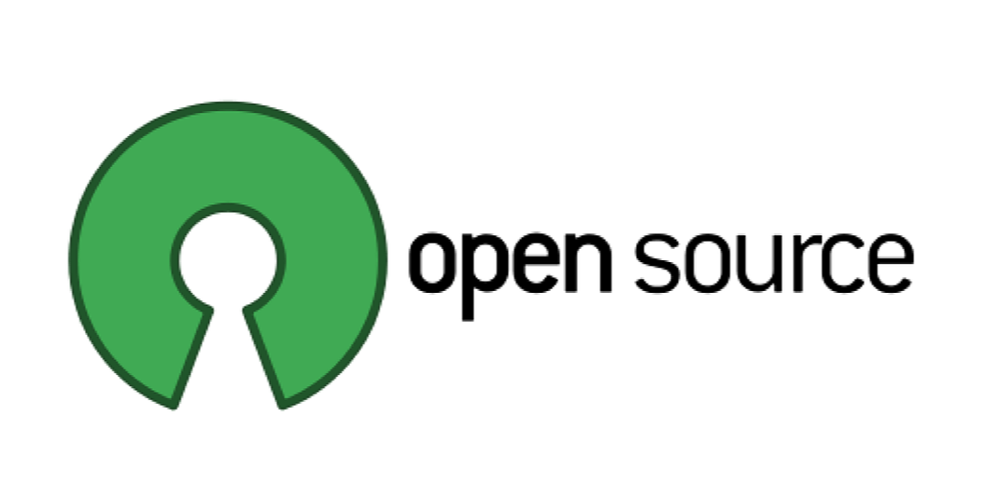
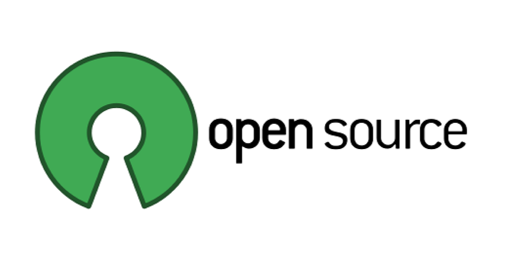
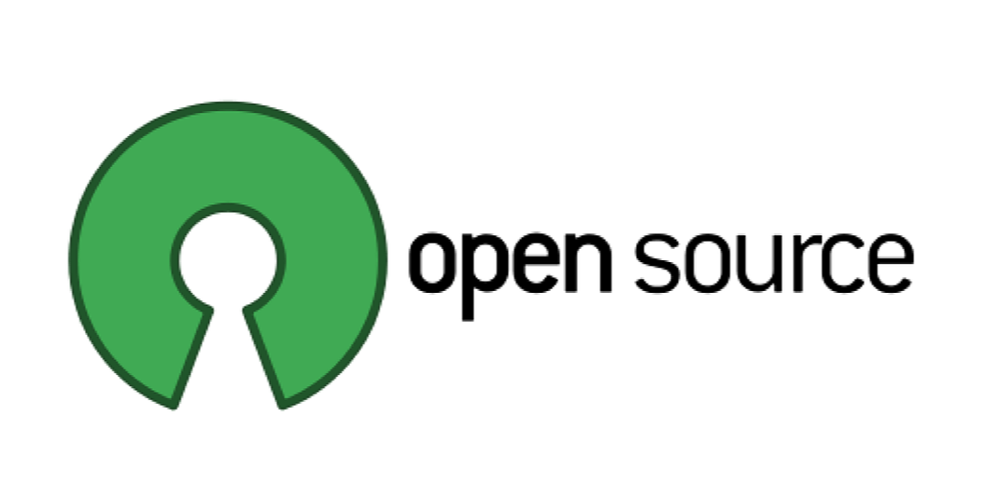
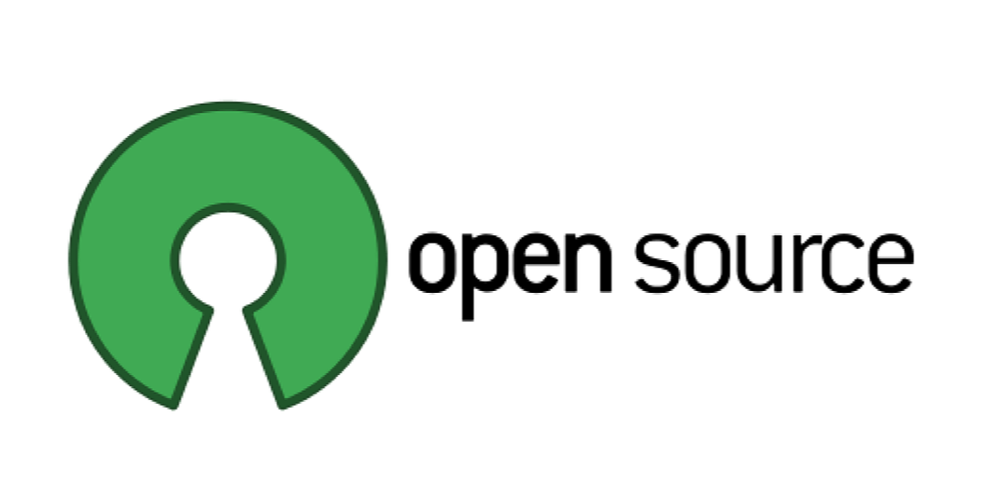

RočnÃkový projekt
Software
Gymnázium ĽudovÃta Š túra v TrenÄÃne
1. mája 2
911 35 TrenÄÃn
Domov
Demoverzia a freeware
Adware a shareware
Open source
Public domain
Upgrade a update software
Galéria
 



 
